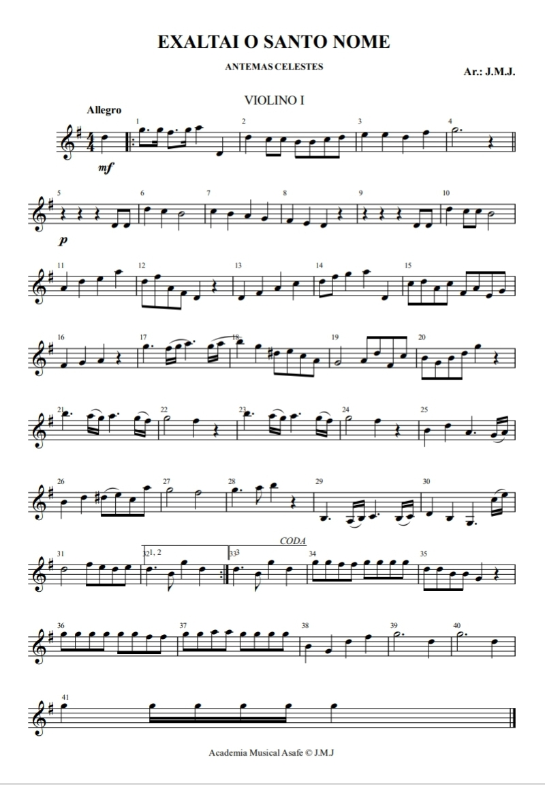
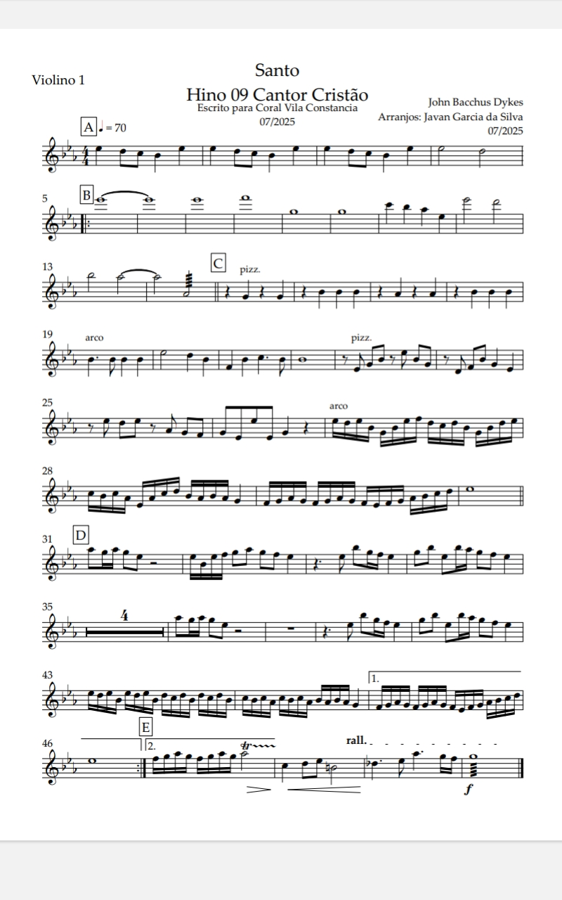
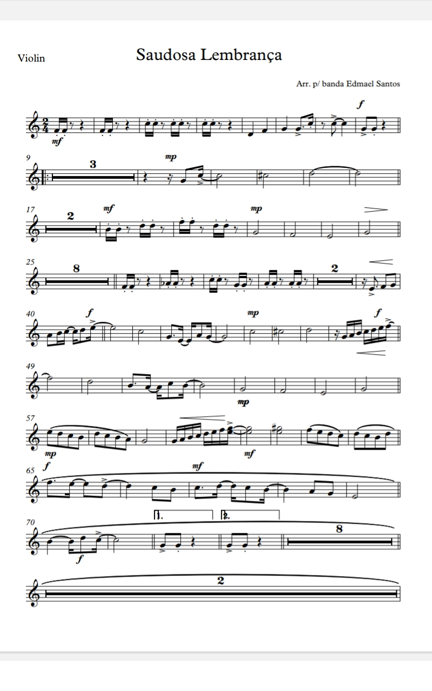

Exaltai
Uma bela composição para violino N° 1 e 2, perfeita para treinar técnica e expressão musical.

Santo
Um dos clássicos mais famosos da harpa cristã, ideal para apresentações calmas.

Saudosa lembrança
Obra desafiadora com passagens rápidas e dinâmicas, excelente para avançar no aprendizado.